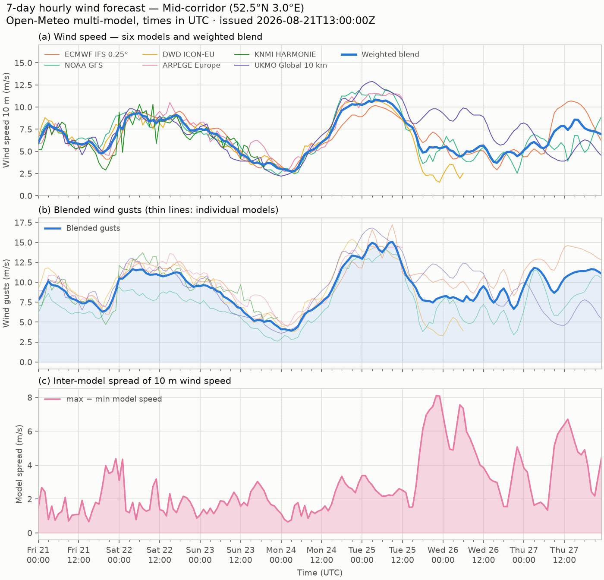

Preferred conditions
Window criterion: 18–30 kt from 205–235° (SSW) or 305–335° (NW), sustained ≥ 6 consecutive hours — checked against the six-model blend.
7-day wind outlook
The learned blend over all six models, gusts, and model spread — rendered by the agent.
